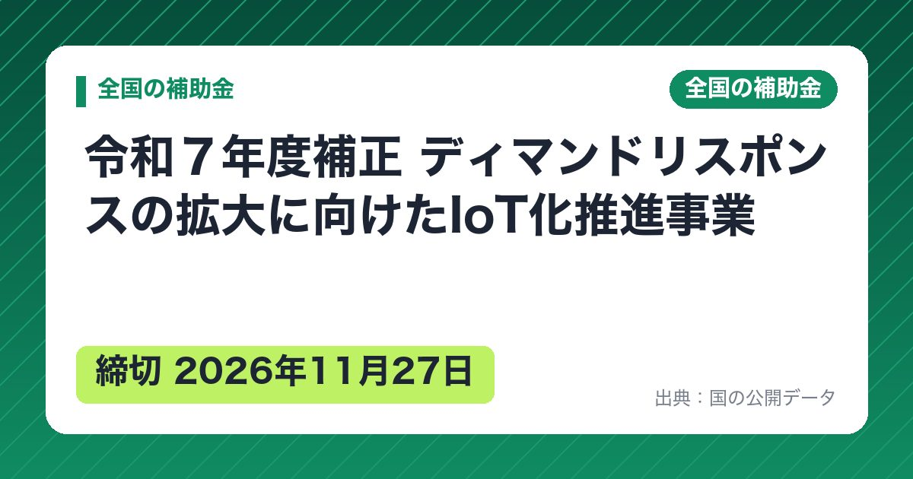

令和７年度補正 ディマンドリスポンスの拡大に向けたIoT化推進事業

締切 2026年11月27日｜上限 2,000万円
DR対応IoT化
概要
| 対象地域 | 全国 |
|---|---|
| 補助上限額 | 2,000万円 |
| 補助率 | 1/2以内 |
| 受付期間 | 2026年3月24日 〜 2026年11月27日 |
| 対象の従業員数 | 従業員数の制約なし |
| 利用目的 | 新たな事業を行いたい |
| 対象業種 | 電気・ガス・熱供給・水道業 |
| 実施機関 | 令和７年度補正 「再生可能エネルギー導入拡大・分散型エネルギーリソース導入支援等事業費補助金」ディマンドリスポンスの拡大に向けたIoT化推進事業 |
広告補助金の申請には決算書・帳簿が必要です。会計ソフト・開業の手続きの例：
・やよいの青色申告オンライン  （個人事業主の確定申告に）
（個人事業主の確定申告に）
・無料の確定申告自動化ソフト マネーフォワード クラウド確定申告  （確定申告をかんたんに）
（確定申告をかんたんに）
・無料の会計自動化ソフト マネーフォワード クラウド会計  （法人・個人の会計を自動化）
（法人・個人の会計を自動化）
・補助金なら、パソコンとセットでお得に導入【freee会計】  （補助金を使う導入プランあり・詳細は公式で）
（補助金を使う導入プランあり・詳細は公式で）
・開業届作成するなら【弥生のかんたん開業届】  （創業補助金の前に個人で開業する方へ）
（創業補助金の前に個人で開業する方へ）
・会社設立を無料で始めるなら【弥生のかんたん会社設立】  （法人を作る方へ）
（法人を作る方へ）
公募の内容（原文の抜粋）
■目的・概要
2050年のカーボンニュートラル、2040年のエネルギーミックス達成に向けては、再生可能エネルギー（以下、「再エネ」という。）の最大限の導入・活用が必要不可欠である。2040年の電源構成は再エネ比率が４割～５割程度と設定されており、より一層の再エネ電源導入促進の観点から、需要家側に設置されている分散型エネルギーリソースを活用したディマンドリスポンス（DR）の普及拡大が求められている。こういったDRの担い手として、アグリゲーターの活躍が期待されている。
このような状況を踏まえ、本事業では、まだDRに活用されていない既存リソースのIoT化を支援し、アグリ ゲーターが外部から遠隔監視・制御等が行えるようにすることで、電力需給ひっ迫時だけでなく再エネ出力 制御対策にも活用し、電力の安定供給及び再エネ設備の更なる導入加速に貢献する。
■応募資格
（DRアグリゲーター）
下記①～⑥の要件をすべて満たす事業者を、DRアグリゲーターとして、SIIは登録及び公表をする。
①日本国内において事業活動を営んでいる法人であること。
②補助事業者の事業を確実に遂行するために必要な経営基盤を有し、事業の継続性が認められる者であること。
③IoT化によって、需要家所有のリソースの状態を監視し、遠隔制御・制御指示等することが可能な者であること。
④本事業の実施及びその後の各種電力市場等への調整力等の供出に関して、法令、規程、エネルギー・リソース・アグリゲーション・ビジネスに関するサイバーセキュリティガイドライン、その他各種セキュリティガイドライン等に基づいた適切な対策等を実施できる者であること。
⑤需要家側に新たに導入するIoT化関連機器のうち、通信を行う設備において、JC-STAR★1を取得した機器を使用する者であること。
⑥経済産業省から補助金等停止措置又は指名停止措置が講じられていない者であること。
※その他、公的資金の交付先として社会通念上適切と認められない者からの申請は認めない。
⑦その他、公募要領P.13に記載するDRアグリゲーターの役割を全て責任をもって遂行できる者であること。
（補助対象事業者）
下記①～⑦の要件をすべて満たす事業者を、補助対象事業者（以下「補助事業者」という。）とする。
①日本国内において事業活動を営んでいる法人であること。
② 補助事業により導入する補助対象設備の所有者であること。
※リース等により補助対象設備を導入する場合は、リース事業者と設備の使用者が共同で申請すること。通常のリース以外又はTPOモデル等での申請をする場合は事前にSIIに確認すること。
③補助事業を確実に遂行するために必要な経営基盤を有し、事業の継続性が認められる者であること。
④需要家所有の既存のリソースをIoT化し、DR契約をDRアグリゲーターと需要家間で締結ができる者であること。契約期間は少なくとも2028年3月31日まで（以下「DR対応期間」という。）継続すること。
※DR契約については、公募要領P.13【2‐4.DR契約について】を参照。
※リース等により補助対象設備を導入する場合は、リース事業者はDRアグリゲーターと需要家間で補助対象設備を活用したDR契約が締結されることに同意できる者であること。
⑤④の実施状況等についての報告を国又はSIIが求めた際、DR対応期間中の実施状況をDRアグリゲーターが報告を行うことに同意できる者であること。また、DR対応期間終了後であっても、補助対象設備の処分制限期間中は善良なる管理者の注意をもって設備の維持、管理をし、補助対象設備の活用状況についてSIIから求めがあった場合や、活用状況に変更（売却や廃棄を含む）が必要な場合は事前にSIIに連絡をできる者であること。
⑥本事業の実施及びその後の各種電力市場等への調整力等の供出に関して、法令、規程、その他各種セキュリティガイドライン等に基づいた適切な対策等を実施できる者であること。
⑦経済産業省から補助金等停止措置又は指名停止措置が講じられていない者であること。
※その他、公的資金の交付先として社会通念上適切と認められない者からの申請は認めない。
■問合せ先
dr_iot_shinsa@sii.or.jp
広告
全国のほかの補助金
- 「グリーンイノベーション基金事業／次世代型地熱技術の開発」の公募（締切 2026年11月20日）
- 令和７年度（補正予算）地域脱炭素実現に向けた具体的施策実装支援事業（四次公募）（締切 2026年11月20日）
- 令和８年度地域脱炭素実現に向けた具体的施策実装支援事業（締切 2026年11月20日）
- 【三次公募】令和８年度 天然ガス利用設備による強靱性向上対策事業費補助金（締切 2026年11月20日）
- エイジフレンドリー補助金（締切 2026年11月20日）
- 「太陽光発電導入拡大等技術開発事業」の第3回公募（締切 2026年11月25日）
- 【農林水産省】中山間地域所得確保推進事業（締切 2026年11月25日）
- 「ポスト5G情報通信システム基盤強化研究開発事業（社会課題解決に向けた量子コンピュータ次世代機開発・実証の加速）」（g12-2：部素材）の追加公募（締切 2026年11月26日）